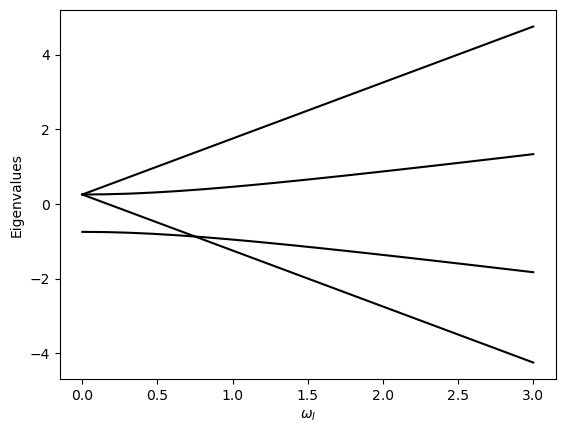

import numpy as np
import matplotlib.pyplot as plt
def twospins(omI,omII,gam):
hbar = 1.
paulis = paulimatrices()
iden = np.identity(2)
SIs = [hbar*kron(pa,iden)/2 for pa in paulis]
SIIs = [hbar*kron(iden,pa)/2 for pa in paulis]
SIdotII = sum([SIs[i]@SIIs[i] for i in range(3)])
H = -omI*SIs[2] - omII*SIIs[2] + gam*SIdotII
H = H.real
return H
def paulimatrices():
sigx = np.array([0.,1,1,0]).reshape(2,2)
sigy = np.array([0.,-1j,1j,0]).reshape(2,2)
sigz = np.array([1.,0,0,-1]).reshape(2,2)
return sigx, sigy, sigz
def kron(U,V):
n = U.shape[0]
p = V.shape[0]
W = np.zeros((n*p,n*p), dtype=np.complex64)
for i in range(n):
for k in range(n):
for j in range(p):
for l in range(p):
W[p*i+j,p*k+l] = U[i,k]*V[j,l]
return W
def qrmet(inA,kmax=100):
A = np.copy(inA)
for k in range(1,kmax):
Q, R = qrdec(A)
A = R@Q
# print(k, np.diag(A))
qreigvals = np.diag(A)
return qreigvals
def qrdec(A):
n = A.shape[0]
Ap = np.copy(A)
Q = np.zeros((n,n))
R = np.zeros((n,n))
for j in range(n):
for i in range(j):
R[i,j] = Q[:,i]@A[:,j]
Ap[:,j] -= R[i,j]*Q[:,i]
R[j,j] = mag(Ap[:,j])
Q[:,j] = Ap[:,j]/R[j,j]
return Q, R
def mag(xs):
return np.sqrt(np.sum(xs*xs))
if __name__ == '__main__':
n_omegas = 20
gamma = 1
omega_I = np.linspace(0,3.0,n_omegas)
eigenvalues = np.zeros((n_omegas, 4))
for jj in range(n_omegas):
H = twospins(omega_I[jj],2*omega_I[jj], gamma)
eigenvalues[jj] = qrmet(H)
plt.plot(omega_I,eigenvalues,'k-')
plt.xlabel(r'$\omega_I$')
plt.ylabel('Eigenvalues')